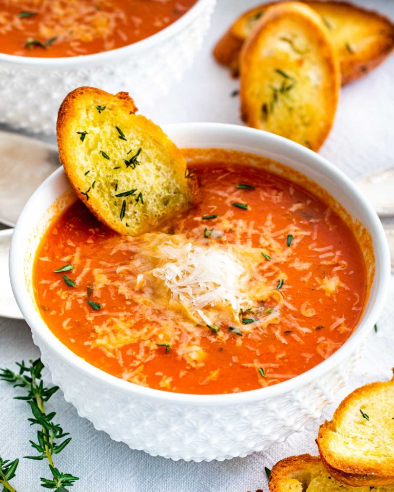

Roasted Tomato Soup

Tomato soup is a soup with tomatoes as the primary ingredient. It can be served hot or cold, and may be made in a variety of ways.
It may be smooth in texture, and there are also recipes that include chunks of tomato, cream, chicken or vegetable stock, vermicelli,
chunks of other vegetables and meatballs.
This rich and deliciously smooth Roasted Tomato Soup is loaded with fresh herbs and roasted tomato sweetness like none other.
It’s truly the best kind of comfort food. Your entire family, and their stomachs, are going to completely agree!
This classic roasted tomato soup is borderline perfection! Healthy and low fat, easy to make, and oh-so creamy, minus the cream!
This is my go to tomato soup recipe, it comes together so quickly and is a dish the whole family will enjoy. I’m willing to bet that this bowl
of comfort will make it into your weekly rotation of recipes!
Time required (Preparation and cooking): 1 hour and 25 minutes
Ingredients:
- 2 pound tomatoes
- 4 tablespoons olive oil
- ½ teaspoon salt or to taste
- ¼ teaspoon pepper or to taste
- 2 cups vegetable broth
- 1 tablespoon butter
- 1 large onion
- 3 cloves garlic
- ¼ cup fresh basil
- 1 tablespoon fresh thyme
- 2 tablespoons all-purpose flour
- 1 tablespoon brown sugar
- 1 teaspoon smoked paprika
Steps:
- Preheat your oven to 400°F. Add the tomatoes to a baking pan, drizzle with 2 tbsp of olive oil and then season with salt and pepper.
- Transfer the pan to the oven and bake for about 30 minutes or until the tomatoes start to char.
- Add the tomatoes with the skin on to a food processor and 1 cup of the vegetable broth. Blend until tomatoes are smooth.
- In a heavy soup pot, heat the remaining olive oil and melt the butter over medium-heat. Add the onion and cook until translucent.
- Stir in the garlic and cook for another 30 seconds until aromatic.
- Add the fresh basil, thyme and stir. Sprinkle the flour over the onion mixture and stir again. Cook for about 1 to 2 minutes.
- Stir in the remaining 1 cup of vegetable broth or whisk if necessary to remove any flour lumps.
- Next, pour the blended tomatoes and stir. Finally, stir in the brown sugar, smoked paprika, and if needed, season with salt and pepper.
- Let the soup simmer uncovered for 20 – 30 minutes. Serve with grated parmesan cheese and toasted bread.